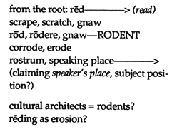

Brief commentary, new slants, current scholarly finds are invited for our Alerts section. Poets and scholars are equally welcome to comment.
ERASURE/RESTORATION, Theresa Hak Kyung Cha
From A Far: Dictee by Myung Mi Kim
Cataract: Appreciating Jane Bowles by Jane Miller
Some thoughts about erasure by Meredith Stricker
Theresa Hak Kyung Cha came to the United States from Korea at the age of twelve, speaking no English. Between that year and 1983--when her life was taken in an act of random violence in New York City--Cha developed an extraordinary sensitivity to the struggle and meaning of acquiring language and attempting its transformative use in a culture which marked her--the speaker--as marginal. Cha's body of writing, performance work and video/film material is a particularly strong and poignant example of a woman artist's struggle to claim voice out of silence. After studying art, performance and film technique at UC Berkeley and at the Centre d'Etudes Américaine du Cinéma à Paris, Cha moved to New York to write and direct video and film performances and installations. She was an educator as well, teaching video theatre at Elizabeth Seaton College and sharing her artistic vision at Halifax School of Design in Nova Scotia in 1982. HOW(ever) dedicates this issue to Theresa Cha's continuing presence in her words. The works on pages 1 through 4 are excerpted from Cha's book, Dictee, published by Tanam Press in 1983. An appreciation of this book and a Cha bibliography follow.
Excerpts from Dictee will be included in the traveling exhibit "Autobiography: In Her Own Image," a collection of multi-cultural art works by women to appear in Atlanta, Georgia, October 14 to November 12; Mills College Art Gallery, Oakland, California, January 29 to March 5; Ritter Gallery, Florida Atlantic University, Boca Raton, Florida, March 21 to April 28; and Women and Their Work Gallery, Austin, Texas, May 22 to June 26.
From A Far--the arrival of Theresa Hak Kyung Cha from Korea to America, crossing ocean, crossing over, one tongue to another. The attenuation that is learning another tongue, space in which the fissure the fission in words do the work of memory. Inheritance up against time figured without measure. The difficulty of speaking, uttering a single sound, mired by the weight of history.
A generation of mothers forced to speak the language of the oppressor. Mothers who spoke Korean under their breaths knowing that death was the punishment for this act. As part of the attempt to subjugate a nation, the Japanese during a thirty-six year colonization of Korea, forbade Korean from classrooms, from marketplaces, from dinner tables. In Dictee, Cha traces this and other sites of struggle in Korean history. In relating the work of Yu Guan Soon, a nineteen-year-old woman who led a resistance group against the Japanese in 1919, or in evoking her own family's history in the context of other political struggles in Korea, Cha is not paying homage to points fixed in time but rather, suggesting that history defies linearity: the figure of Yu Guan Soon juxtaposed with the figure of Joan of Arc--what happened, what continues to happen.
This notion of simultaneity is central to Cha's language practice in Dictee. Painstaking awareness of lip over lip, tongue against teeth, to produce even one utterance: the forging between word and word, word and punctuation, eroding even as it is being constructed. Similarly, Cha may "spell out" camera techniques--fade in, close up, extreme close up, so the image or a movement of thought is constituted by the labor of its parts and not the arrival at a whole. Dictee has allegiances to autobiography, narrative, lyric, but moves beyond each of these. Anatomical diagrams of the larynx are inserted; photographs represent a lineage of women (Yu Guan Soon, Cha's mother, a still of Joan of Arc from Carl Dreyer's La passion de Jeanne d'Arc); Chinese calligraphy presences man, woman, mother, father; side-by-side presentations of French and English texts signal the intrusion/collusion inherent in traversing between two languages. Layering and erasure. Cha exposes minutiae, process, to dispel the idea that one seamless version of reality governs a text. Dictee gives shape to the nearly unwritten, the nearly invisible, the hardly say(able).
". . .the arrangement that she was to be come his wife. . . Decided for her. Perhaps she learned to love him. . . She deserved so little. Being wife. . . Her non-body her non-entity." Gender as it specifies relationship to language. Disappearance, abnegation, constant postponement under the sign of wife (woman). "She moves in pauses. She yields space and in her speech, the same. Hardly speaks. Hardly at all." Gender and race defining accessibility to language, empowerment. However full of "pause," however full of "void," the voice that emerges in Dictee invokes "the remnant is the whole."
BIBLIOGRAPHY: THERESA HAK KYUNG CHA Publications:
Apparatus, edited by Cha, Tanam Press. (New York, 1980) An essential anthology of classic and contemporary texts on cinematography [Barthes, Vartov, Baudry, Metz, Angst, Woods, Vernet, Deren].
"Exilée Temps Morts," in Hotel, collection of written works by artists, edited by Reese Williams. Tanam Press. (New York, 1980).
Dictee, with written and visual text by Cha. Tanam Press. (New York, 1982)
Untitled piece in Fire Over Water, collection edited by Reese Williams, Tanam Press. (New York, 1986)
Other work by Theresa Cha has appeared in:
"Clio/History," from Blasted Allegories, edited by Brian Wallis, with foreword by Marcia Tucker. The New Museum of Contemporary Art (New York) and The M.I.T. Press (Cambridge, 1987).
Publications about Theresa Cha:
Robert Atkins, "Homicide, Homelessness & Wingèd Pigs," Village Voice, Feb. 16, 1988.
Judith Barry, "Women, Representation, and Performance Art: Northern California," in Performance Anthology: A Source Book for a Decade of California Performance Art, ed. Carl E. Loeffler and Darlene Tong (San Francisco: Contemporary Arts Press, 1980).
Janis Crystal Lipzin, "Asian American Films," Artweek 13, no. 20 (May 22, 1982): p.8.
Donald Richie, "The Asian Bookshelf," Japan Times, July 23, 1983.
Moira Roth, "Toward a History of California Performance, Part One," Arts Magazine 52, no. 8 (Feb. 1978): pp. 94-103.
Michael Stephens, "Theresa Hak Kyung Cha," in The Dramaturgy of Style: Voice in Short Fiction, Cross Currents / Modern Critiques series (Carbondale: Southern Illinois University Press, 1986).
Susan Wolf, "Theresa Cha: Recalling Telling ReTelling," Afterimage (summer 1986).
By 1932, Gertrude Stein had completed many of her "private performances" and wrote, for amusement, The Autobiography of Alice B. Toklas.
Donald Sutherland, for many years the only critic who understood her with love, says the book is told "in a purer and more closely fitting prose. . . than even Gide or Hemingway have ever commanded. . . ."Four years later Djuna Barnes published Nightwood,
with an introduction by T. S. Eliot, which included the remark, "the great achievement of a style. . . ." That year Jane Bowles wrote Le Phaéton Hypocrite, a manuscript now lost. She was not to begin work on her novel,
Two Serious Ladies,
until two years later. All three of these prose writers have in common a magical and luminous obsession with women. How this corresponds to critical acclaim, couched as it has been in terms of wit and surprise, moves and disturbs.
In particular the case of Jane Bowles is an interesting one. Bowles' style is indeed surprising and funny, and John Ashbery, for one, has read it right in declaring "no other contemporary author can consistently produce surprise of this quality, the surprise that is the one essential ingredient of great art." Yet Bowles has had a difficult time achieving recognition. Physically, she certainly had a difficult life. Early on she lost the flexibility in one knee to tuberculosis; she suffered a stroke at the age of 40; she had great lapses in concentration and confidence all her writing life, but especially after the stroke. Her marriage to the composer and novelist Paul Bowles, and their incessant traveling to South America, North Africa, and Europe, reinforced Jane's near-manic emotional environment. And her fiery affairs and flirtations with women liberated and at the same time obsessed her. [ See Millicent Dillon's biography of Bowles, A Little Original Sin,
Holt, Rinehart & Winston (New York, 1981), reprinted by Virago (London, 1988).]
The "quirkiness" of her work has much to do with the fact that to Jane Bowles "all choices," as Dillon puts it, "are ultimately moral choices." Jane was always precocious and adventurous: as a writer, independent and ambitious. Her letters are exercises in literary precision; Dillon calls them exercises in emotional accuracy. This is where we get to see Jane's sense of herself as "other"--it is here that the moment for Jane Bowles stops and vibrates. She writes: "As you see you will get no news from me today. . . .I prefer irrelevant detail." Later, in another letter (this time to Paul), she brilliantly closes in on the case of the isolated writer:
| I am serious but I am isolated and my experience is probably of no interest at this point to anyone. . . .This problem you will never have to face because you have always been a truly isolated person so that whatever you write will be good because it will be true which is not so in my case because my kind of isolation I think is an accident, and not inevitable. . . .Not only is your isolation a positive and true one but when you do write from it you immediately receive recognition because what you write is in true relation to yourself which is always recognizable to the world outside. With me who knows?" |
| --from Out in the World: Selected Letters of Jane Bowles, edited by Millicent Dillon, Black Sparrow Press (Santa Barbara, 1986), p. 33. |
Jane Bowles was constantly trying to fool herself out of what she termed "agonizers," the on-going description of her fight against bad health, depression, the inability to stick to a writing schedule. Jane's reputation, such as it is at all, as an eccentric, flighty woman with a handsome prose style, is a thin description. In fact, it seems to me, she is obsessive, neurotic, demanding, spoiled and brilliant. Naturally she is these: she's adolescent. Her writing for the most part stops in her early thirties; the astonishing thing is the fact of a profound moral consciousness in her work. Her gift for paradox is even more amazing when one realizes the desperateness of her relation to the world. From the mouths of one of her characters, Mrs. Copperfield in Two Serious Ladies:
And again,
It's true that Jane Bowles herself had paranoid obsessions; they are chronicled in her letters. Generally we are taught either that life and art are separate or that life and art are connected. For Jane there is no debate. Her brilliance and misfortune make a life and her life is tied to her situation in history. If it can be said that Gertrude Stein and Djuna Barnes "escaped" a particularly American constriction and found liberation and approval (for Stein, late; for Barnes, early), it may be said of Bowles that her friends admired and supported her (Libby Holman did so financially after Jane's stroke at 40), but that her reputation remains closeted among those few who have read with passion My Sister's Hand in Mine: The Collected Works of Jane Bowles,
issued as one of the "Neglected Books of the 20th Century" by Ecco Press in 1978. An audience without an understanding of her materials--the unconscious, the primitive, the intuitive--might find her work hermetic, effete or quaint, and if her writing is remembered at all, it may be because it is thought of as merely "odd." But this is not that hand in mine. This is:
This is not, nor is it for Bowles ever, mere surprise, nor surrealism, nor play. Jane is obsessed with the elemental and crystalline nature of experience, and every description, ardent, detailed, is a description of the whole. This is the magic that tortured and invited Jane in. For writers and readers of literature, there is no more intoxicating transformation; as in Woolf or Proust, a style is born out of it.
Jane Miller's
The
Greater Leisures
(Doubleday), was a selection of The National Poetry Series in 1983. Other poetry collections:
Many Junipers, Heartbeats
(Copper Beech Press) and
Black Holes, Black Stockings,
in collaboration with Olga Broumas. Miller teaches in the Writing Program at the University of Arizona, Tucson.

• "And tho poetry does not (they say) involve sex (i.e. that I am female), in fact poetry involves the gender system of asymmetry around my femaleness--my work will, all cultural history tells us, be 1) less able to be easily written 2) less able to be consumed (read, received, thought about, noticed, understood) 3) less able to be assimilated to the mainstream or the hegemonic margins of our culture 4) more easily excluded from anthologies or institutions of record 5) more "naturally" forgotten. I say that neutrally, yet in a kind of rabid grief for women in general and not gainsaying that YOU now are interested in it, and that people have had bouts of fascination with women's writing in the past 250 years at least, and probably more. And some of these bouts have had real cultural impact which one kind of interpretive grid (the feminist kind) can discover. . . .Mainly our culture has continually divested itself of the impact of any woman writing within it. To say "I hope that this has now changed" is to put the most Pollyanna-ish skirt on what is a constant struggle over the politics of culture. (Nor are women the only identifiable "group" to which this can happen.)" [ Editor's Note: this excerpt from a dialogue-by-mail between Rachel Blau DuPlessis and Tom Beckett, which is intended as an interview to be published in a future issue of
The Difficulties.]

"Memory," she whispered. "Memory of the things I have loved since I was a child. My husband is a man without memory." [Think of Paul Bowles' title for his autobiography:
Without Stopping.]
She felt intense pain at the thought of this man whom she liked above all other people, this man for whom each thing he had not yet known was a joy. For her, all that which was not already an old dream was an outrage. [p. 40]

Mrs. Copperfield hated to know what was around her, because it always turned out to be even stranger than she had feared.

They walked for a long time. The streets began to look
all alike. On one side they went gradually uphill, and on the other they descended abruptly to the muddy regions near the sea. The stone houses were completely colorless in the hot sun. All the windows were heavily grilled; there was very little sign of life anywhere. They came to three naked boys struggling with a football, and turned around and stared at them shamelessly. . . .(from
Two Serious Ladies,
p. 59).
This is pure rugged description, crisp and cinematic, and also emotionally complex--her diction and tone are not that of, for example, her husband, whose strong sense of fate moves his sentences inexorably down and away, and whose emotional scenes become, therefore, beautifully and typically flat. Jane doubles back, reasserts, challenges, gives in, catches up, reverberates--a complexity natural to her. From Bowles' unpublished
Out in the World:*

He was barely conscious of his surroundings when he reached for the wall and felt the wind blowing through his fingers. . . . He could see fields and blossoming orchards he had never known existed. In the distance there were cows standing in the pastures and blue oats curving in the breeze. Some of the cows were in the shadows and others flamed red in the sun. . . .

[He was wearing] a green sleeveless tunic that buttoned below his knees, . . . He had felt ashamed of his costume and the weight of the corn on his head; but of all the costumes in the room his was the only one that seemed sweet and natural to him. . . .From a distance he watched the cow. . . .It stayed near the middle of the room. There were children inside it. He knew that. He gazed at it with a feeling of deep longing and admiration. It had a serene face. . . .

The cow was millions and millions of miles away from him, across the ocean, across several oceans and another ocean, where instead of land a whole new ocean began. . . .

While he was deeply absorbed in his long dream a paper costume smashed into his face and chest. When he opened his eyes, everything was pink. He commenced to thrash at the paper but it backed away of itself. A little fat girl stood blinking at him. She was dressed as a big rose. . . .(from
Selected Letters,
unpublished mss., p. 307-308*)
 --Jane Miller
--Jane Miller


Author's Notes:


Some thoughts about erasure
--the idea that erasure is always itself also a mark (as in a drawing visible across the grain of pencil shading and in the traces of eraser dust or scraped across the etching plate, heavily burnished where unmarking requires more intention and effort than the original.
--erasure as mark:
not
an act of nature (as in the clouds appear, then disappear). Seamless erasure = entirely suspect.
--reconfirming the validity of H.D.'s treatment of text as palimpsest: exposing erasure as mark in the text throughout (overt under the writing). Forgetting (or erasure) not allowed to appear as a transparent, "normal" condition. Reclaiming (erased) glyphs--values, knowledge.
--erasure of hieroglyphs meant absolute disappearance* of that named person's memory and history gone utterly (not to be uttered). Erasure renders ideology. (*from Kagan's jr. high school text on Hieroglyphs, I think).
--a critical polemic: texts of exposed and unexposed erasure.
--some notes on the sources of
erase
(from
American Heritage Dictionary):
 (claiming
speaker's place,
subject position?)
(claiming
speaker's place,
subject position?)

 cultural architects = rodents?
cultural architects = rodents?
 reding as erosion?-->
reding as erosion?-->
--to claim erasure as an act (someone erases; is erased by someone) so that erasure itself is not erased, not invisible to us.

 --from journal notes by Meredith Stricker
--from journal notes by Meredith Stricker